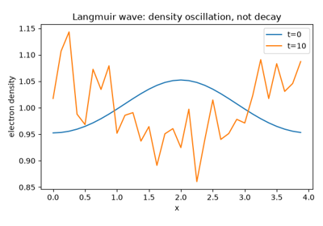

Examples#
This gallery walks through every public feature of physicskit.plasma:
single-particle motion in electromagnetic fields, magnetohydrodynamics,
cold-plasma waves, particle-in-cell kinetic theory, drift-wave
turbulence, and particle acceleration in a plasma wakefield.
Each script in this gallery is self-contained and can be run directly with
python examples/plasma/<section>/<script>.py. Every script also
carries an RST module docstring as its title/description and uses # %%
markers to split narrative text from code, which is exactly what
Sphinx-Gallery renders into the pages below – the script is the source of
truth for what you see, not a copy of it.
Sections#
single_particle – charged-particle motion in electromagnetic fields: the guiding-center drifts (E-cross-B, grad-B, curvature) and magnetic mirror bounce motion of the adiabatic-invariant picture, the energy-conserving Boris particle pusher, and the exact gyro-orbit recovering the guiding-center E-cross-B drift on time-average – the single-particle foundation gyrokinetic turbulence theory builds on.
mhd – the plasma as a single conducting fluid: Alfven and magnetosonic wave speeds (including an animated Alfven pulse splitting and propagating along the field), the Grad-Shafranov equilibrium behind every tokamak’s nested flux surfaces and safety-factor profile, and the Sweet-Parker vs. Petschek models of magnetic reconnection, with a time-evolving X-point reconnection simulation animated alongside the Sweet-Parker scaling laws.
waves – cold-plasma wave theory: Langmuir’s plasma frequency across astrophysical and laboratory densities, Stix’s dielectric tensor with the Clemmow-Mullaly-Allis (CMA) diagram organizing every cold-plasma wave mode, and the ion-acoustic soliton propagating without change of shape under the Washimi-Taniuti KdV reduction.
kinetic – particle-in-cell (PIC) kinetic theory: Landau damping reproduced from first principles with no collision term anywhere in the equations, the two-stream instability as its mirror-image kinetic growth mechanism (now with an animated phase-space vortex), the Weibel/filamentation instability growing current filaments from temperature anisotropy, and a Langmuir wave ringing at the plasma frequency instead of damping away.
turbulence – the reduced Hasegawa-Mima model for magnetized-plasma drift-wave turbulence: small-amplitude potential noise self-organizing into long-lived coherent vortices.
acceleration – a test charge surfing a prescribed traveling plasma wakefield, the qualitative picture behind Tajima and Dawson’s laser wakefield accelerator proposal.
Particle acceleration#
A test charge surfing a prescribed traveling plasma wakefield
(wakefield_e_field()), integrated
with the same energy-conserving Boris pusher used for gyro-orbits
elsewhere in this package
(simulate_wakefield_acceleration())
– the qualitative “surfing” picture of plasma-wakefield acceleration,
without the driver’s own self-consistent field generation.

Plasma wakefield acceleration: a test charge surfing a traveling wave
Kinetic theory (particle-in-cell)#
An electrostatic particle-in-cell (PIC) solution of the 1D1V
Vlasov-Poisson system: particles stream along exact single-particle
orbits and the self-consistent field is recovered by depositing their
charge onto a grid and solving Poisson’s equation each step
(pic_simulate()). The same
deposit-solve-gather-push pipeline reproduces collisionless Landau
damping (landau_damping_ic(),
landau_damping_rate()), its
mirror-image growth mechanism, the two-stream instability
(two_stream_ic()), and a Langmuir wave
ringing in place at the plasma frequency
(langmuir_wave_ic()), all without ever
assuming a collision operator. The Weibel/filamentation instability
(weibel_growth_rate(),
simulate_weibel_filamentation())
is treated as a reduced quasi-linear model of the same current-driven
physics, at the opposite (temperature-anisotropy) end of the kinetic
spectrum from a beam-driven instability.

Landau damping from first principles with particle-in-cell

The two-stream instability: exponential growth and phase-space vortices

Weibel filamentation: growing current filaments from temperature anisotropy

Langmuir waves: electron density ringing at the plasma frequency
Magnetohydrodynamics#
Treats the plasma as a single conducting fluid rather than a collection of
orbiting particles: the characteristic Alfven and magnetosonic wave speeds
(alfven_speed(),
magnetosonic_speeds()); static toroidal
equilibrium via the Grad-Shafranov equation
(solve_grad_shafranov(),
safety_factor_large_aspect_ratio()); and
resistive magnetic reconnection, comparing the classic Sweet-Parker model
against Petschek’s faster X-point revision
(sweet_parker_rate(),
petschek_rate()).

Alfven waves and the magnetosonic wave-speed diagram


Solving the Grad-Shafranov equation for nested flux surfaces

Single-particle motion#
Charged-particle motion in electromagnetic fields, in two complementary
pictures: the exact Lorentz-force orbit integrated with the
energy-conserving Boris pusher
(boris_integrate()), and the
guiding-center picture that averages over the fast gyration to track only
the slow drift of the orbit’s center
(exb_drift(),
grad_b_drift(),
curvature_drift()) and the
adiabatic invariant responsible for magnetic mirror confinement
(magnetic_moment(),
magnetic_mirror_bounce()).

Guiding-center drifts and magnetic mirror confinement


Recovering the ExB drift as a time-average of the full orbit
Drift-wave turbulence#
The reduced Hasegawa-Mima model for magnetized-plasma drift-wave
turbulence: small-amplitude potential noise
(drift_wave_noise_ic()) nonlinearly
self-organizes under \(\mathbf{E}\times\mathbf{B}\) advection of
potential vorticity (simulate_hasegawa_mima())
into long-lived coherent vortices – the same phenomenology that governs
cross-field transport in a magnetic-confinement fusion device.

Hasegawa-Mima drift-wave turbulence: noise self-organizing into vortices
Cold-plasma waves#
Linearizes the multi-fluid cold-plasma equations around a uniform
background to get the plasma frequency
(plasma_frequency()) and the Stix
dielectric tensor components \(S\), \(D\), \(P\)
(stix_parameters()), from which every
named cold-plasma wave mode follows as one quartic equation in the
refractive index (cold_plasma_dispersion()),
organized by the Clemmow-Mullaly-Allis (CMA) diagram
(cma_coordinates()). Beyond this linear,
dispersion-relation picture, the ion-acoustic soliton
(ion_acoustic_soliton_profile(),
ion_acoustic_soliton_evolve()) is a
genuinely nonlinear traveling wave, propagating without change of shape
under the Washimi-Taniuti Korteweg-de Vries reduction.


Stix’s cold-plasma dielectric tensor and the CMA diagram

Ion-acoustic solitons: a KdV pulse that never changes shape